Ion chambers in principle are the simplest of all gas-filled detectors. Their normal operation is based on collection of all the charges created by direct ionization within the gas through the application of an electric field. As with other detectors, ion chambers can be operated in current or pulse mode. In most common applications, ion chambers are used in current mode as dc devices, although some examples of pulse mode applications will be given at the end of this chapter. In contrast, proportional counters or Geiger tubes are almost always used in pulse mode.
The term ionization chamber has conventionally come to be used exclusively for the type of detector in which ion pairs are collected from gases. The corresponding process in solids is the collection of electron-hole pairs in the semiconductor detectors described in Chapters 11-13. Direct ionization is only rarely exploited in liquids, although some developments of this type are described in Chapter 19.
Many details that are omitted in the following discussions can be found in the classic books on ionization chambers by Rossi and Staub and by Wilkinson More specific descriptions of chamber design and construction are included in other books, of which Refs. 3-5 are representative examples.
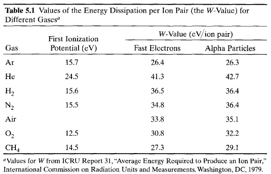
The Fano factor reflects to some degree the fraction of all the incident particle energy that is converted into information carriers within the detector. If the entire energy of the incident radiation were always converted into ion pairs, the number of pairs produced would always be precisely the same and there would be no statistical fluctuation. Under these conditions the Fano factor would be zero. If only a very small fraction of the incident radiation is converted, however, then the ion pairs would be formed far apart and with a relatively low probability, and there would be a good reason to expect that the distribution in their number should follow a Poisson distribution. In gases, the Fano factor is empirically observed to be less than 1 so that the fluctuations are smaller than would be predicted based on Poisson statistics alone.
The Fano factor has significance only when the detector is operated in pulse mode. We therefore postpone further discussions of its magnitude in gases to the following chapter on proportional counters, where pulse mode operation and good energy resolution are more important considerations.
Of the many types of collisions that will normally take place between free electrons, ions, and neutral gas molecules, several that are important in understanding the behavior of gas-filled detectors are shown schematically in Fig. 5.1.
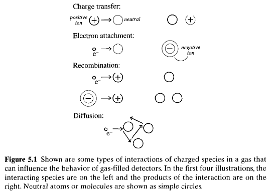
Charge transfer collisions can occur when a positive ion encounters another neutral gas molecule. In such a collision. an electron is transferred from the neutral molecule to the ion, thereby reversing the roles of each. This charge transfer is particularly significant in gas mixtures containing several different molecular species. There will then be a tendency to transfer the net positive charge to the gas with the lowest ionization energy because energy is liberated in collisions which leave that species as the positive ion.The free electron member of the original ion pair also undergoes many collisions in its normal diffusion. In some species of gas, there may be a tendency to form negative ions by the attachment of the free electron to a neutral gas molecule. This negative ion then shares many properties with the original positive ion formed in the ionization process, but with opposite electric charge. Oxygen is an example of a gas that readily attaches electrons, so that free electrons diffusing in air are rapidly converted to negative ions. In contrast, nitrogen, hydrogen, hydrocarbon gases, and noble gases all are characterized by relatively low electron attachment coefficients, and therefore the electron continues to migrate in these gases as a free electron under normal conditions.
Collisions between positive ions and free electrons may result in recombination in which the electron is captured by the positive ion and returns it to a state of charge neutrality. Alternatively, the positive ion may undergo a collision with a negative ion in which the extra electron is transferred to the positive ion and both ions are neutralized. In either case, the charge represented by the original pair is lost and cannot contribute further to the signal in detectors based on collection of the ionization charge.
Because the collision frequency is proportional to the product of the concentrations of the two species involved, the recombination rate can be written \[ \frac{dn^+}{dt} = \frac{dn^-}{dt} = -\alpha n^+ n^- \tag{5.2} \] where \begin{eqnarray} n^+ &=& {\rm number \, density \, of \, positive \, species} \\ n^- &=& {\rm number \, density \, of \, negative \, species} \\ \alpha &=& {\rm recombination \, coefficient} \end{eqnarray} The recombination coefficient is normally orders of magnitude larger between positive ions and negative ions compared with that between positive ions and free electrons. In gases that readily form negative ions through electron attachment, virtually all the recombination takes place between positive and negative ions.
There are two general types of recombination loss: columnar recombination and volume recombination. The first type (sometimes also called initial recombination) arises from the fact that ion pairs are first formed in a column along the track of the ionizing particle. The local density of ion pairs is therefore high along the track until the ion pairs are caused to drift or diffuse away from their point of formation. Columnar recombination is most severe for densely ionizing particles such as alpha particles or fission fragments compared with fast electrons that deposit their energy over a much longer track. This loss mechanism is dependent only on the local conditions along individual tracks and does not depend on the rate at which such tracks are formed within the detector volume. In contrast, volume recombination is due to encounters between ions and/or electrons after they have left the immediate location of the track. Since many tracks are typically formed over the time it takes for ions to drift all the way to the collecting electrodes, it is possible for ions and/or electrons from independent tracks to collide and recombine. Volume recombination therefore increases in importance with irradiation rate. Thus charge separation and collection should be as rapid as possible in order to minimize recombination, and high electric fields are indicated for this purpose.
For ions in a gas, the drift velocity can be fairly accurately predicted from the relation \[ v = \frac{\mu\mathscr{E}}{p} \tag{5.3} \] where \begin{eqnarray} v &=& {\rm drift \, velocity} \\ \mathscr{E} &=& {\rm electric \, field \, strength} \\ p &=& {\rm gas \, pressure} \end{eqnarray} The mobility \(\mu\) tends to remain fairly constant over wide ranges of electric field and gas pressure and does not differ greatly for either positive or negative ions in the same gas. Tabulated values for the mobility of ions in various gases can be found in Ref. 2. Typical values are between 1 and \(1.5 \times 10^{-4} m^2 atom/V\cdot s\) for detector gases of medium atomic number. Therefore, at 1 atm pressure, a typical electric field of \(10^4 V/m\) will result in a drift velocity of the order of \(1 m/s\). Ion transit times over typical detector dimensions of a centimeter will therefore be approximately \(10 ms\). By most standards, this is a very long time.
Free electrons behave quite differently. Their much lower mass allows a greater acceleration between encounters with neutral gas molecules, and the value of the mobility in Eq. (5.3) is typically 1000 times greater than that for ions. Typical collection times for electrons are therefore of the order of microseconds, rather than milliseconds. In some gases, for example, hydrocarbons and argon-hydrocarbon mixtures, there is a saturation effect in the electric drift velocity (see Fig. 5.2).
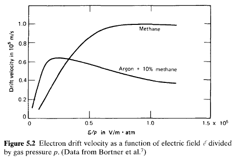
Its value approaches a maximum for high values of the electric field and may even decrease slightly if the field is further increased. In many other gases (see Fig. 6.15), the electron drift velocity continues to increase for the largest \(\mathscr{E}/p\) values likely to be used in gas-filled counters.As the electrons are drifting through the gas under the influence of the electric field, they will to first approximation follow the path of the electric field line that passes through their point of origin (but in the reverse direction to the electric field vector). Random diffusion of the electrons will still be taking place, however, causing each individual electron to follow a slightly different path. For strong electric field values, the increased average energy given the electron in the direction of the field results in different values of the diffusion coefficient [\(D\) in Eq. (5.1)] for the directions that are parallel to or transverse to the field. Over the few microseconds that are typically required for the electrons to reach a collecting electrode, the diffusion in either direction might be of the order of a millimeter or less. While in most standard detectors this charge spreading will have little practical effect, it does play a potential role in limiting the position resolution attainable in "position-sensitive" gas detectors that deduce the location of the ionizing event through the position of arrival of the electrons at the anode, or through measuring the electron drift time.
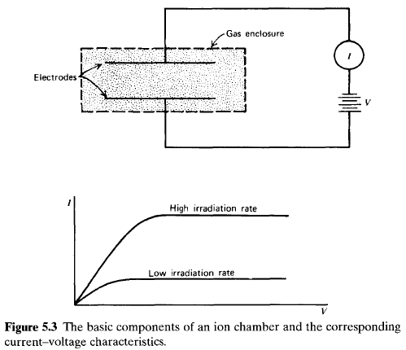
Figure 5.3 illustrates the basic elements of a rudimentary ion chamber. A volume of gas is enclosed within a region in which an electric field can be created by the application of an external voltage. At equilibrium, the current flowing in the external circuit will be equal to the ionization current collected at the electrodes, and a sensitive ammeter placed in the external circuit can therefore measure the ionization current.
The current-voltage characteristics of such a chamber are also sketched in Fig. 5.3. Neglecting some subtle effects related to differences in diffusion characteristics between ions and electrons, no net current should flow in the absence of an applied voltage because no electric field will then exist within the gas. Ions and electrons that are created ultimately disappear either by recombination or by diffusion from the active volume. As the voltage is increased, the resulting electric field begins to separate the ion pairs more rapidly, and columnar recombination is diminished. The positive and negative charges are also swept toward the respective electrodes with increasing drift velocity, reducing the equilibrium concentration of ions within the gas and therefore further suppressing volume recombination between the point of origin and the collecting electrodes. The measured current thus increases with applied voltage as these effects reduce the amount of the original charge that is lost. At a sufficiently high applied voltage, the electric field is large enough to effectively suppress recombination to a negligible level, and all the original charges created through the ionization process contribute to the ion current. Increasing the voltage further cannot increase the current because all charges are already collected and their rate of formation is constant. This is the region of ion saturation in which ion chambers are conventionally operated. Under these conditions, the current measured in the external circuit is a true indication of the rate of formation of all charges due to ionization within the active volume of the chamber.
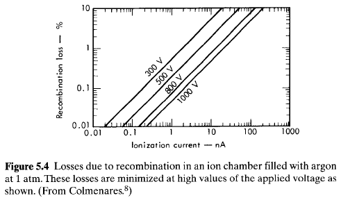
Here the percentage by which the measured current falls short of true saturation is seen to increase as a function of the measured ion current. At the lower irradiation levels, the density of ions and electrons (or negative ions) is correspondingly low, and from Eq. (5.2), the recombination rate is less significant than at high rates. Thus higher voltages are required at high irradiation rates to approach the true saturated ion current. This dependence is evident in the current-voltage characteristics shown in Fig. 5.3 and also is apparent in the example of an ionization chamber used for neutron monitoring shown in Fig. 14.14. In chambers operated with ambient air as the fill gas, increases in the humidity level will also raise the volume recombination rate.If the production of ion pairs is uniform throughout the volume of the ion chamber, the drift of positive charges toward the cathode and negative charges toward the anode will create some imbalance in the steady-state concentrations of the two charge carriers. The concentration of positive ions will be greatest near the cathode; the opposite is true for the negative charges. Wherever a gradient exists for a species that is free to migrate, some net diffusion must take place in the direction of decreasing concentration. The direction of diffusion is therefore opposite that of the charge carrier flow caused by the electric field, and the effect can be to reduce the measured ion current. From an analysis given by Rossi and Staub the perturbation in the measured ion current is given by \[ -\frac{\Delta I}{I} = \frac{\epsilon kT}{eV} \tag{5.4} \] where parallel planar electrodes have been assumed. In this expression, \begin{eqnarray} \epsilon &=& {\rm ratio\,of\,the\,average\,energy\,of\,charge\,carrier\,with\,electric\,field\,present\,to\,that\,without\,the\,electric\,field}\\ k &=& {\rm Boltzmann \, constant} \\ T &=& {\rm absolute \, temperature} \\ e &=& {\rm electronic \, charge} \\ V &=& {\rm applied \, voltage \, between \, electrodes} \end{eqnarray} The size of this loss in the saturation current depends primarily on the applied voltage and the size of the quantity \(\epsilon\) defined above. At room temperature, the factor \(kT/e\) is approximately \(2.5 \times 10^{-2}V\). For ions, \(\epsilon\) is not much larger than unity, and Eq. (5.4) therefore predicts that the loss due to diffusion is negligible even for low values of the applied voltage. When the negative charge is carried by free electrons, however, \(\epsilon\) can be of the order of several hundred and a significant loss in saturation current due to electron diffusion is possible. Because \(\epsilon\) will tend toward a limiting saturated value as the voltage \(V\) is raised to high values, the loss is minimized by operating the chamber at high values of the applied voltage
In many cases, losses due to diffusion and volume recombination can be reduced to insignificant levels at reasonable values of the applied voltage. Columnar recombination is more difficult to eliminate completely, and small losses may persist even at the highest available voltages. It is then helpful to make a number of measurements of the ionization current as a function of voltage in order to determine the true saturated current. It has been shown that under these conditions a plot of \(1/I\) versus \(1/V\) can be used to extrapolate the measurements to zero on the \(1/V\) axis (infinite electric field) to make an accurate prediction of the saturated value of the current.
The geometry chosen for an ion chamber can be varied greatly to suit the application, provided the electric field throughout the active volume can be maintained high enough to lead to saturation of the ion current. Parallel plate or planar geometry leads to a uniform electric field between the plates. Also common is a cylindrical geometry in which the outer shell of the cylinder is operated at ground potential and an axial conducting rod carries the applied voltage. In this case, a field that varies inversely with radius is created. Analytical methods that can be used to predict the current-voltage characteristics of chambers of various geometries are described in Ref. 11.
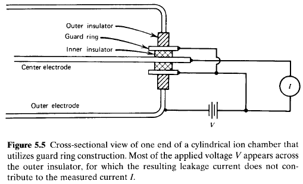
A diagram illustrating the use of a guard ring is shown in Fig. 5.5. The insulator is now segmented into two parts, one part separating the conducting guard ring from the negative electrode and the other part separating it from the positive electrode. Most of the voltage drop occurs across the outer segment in which the resulting leakage current does not pass through the measuring instrument. The voltage drop across the inner segment is only the voltage difference across the ammeter terminals and can be very small. Therefore, the component of leakage current which is added to the signal is greatly reduced compared with the case without the guard ring.
Insulators for applications that do not involve high radiation fields are normally manufactured from one of the high-resistivity synthetic plastics. Care is taken to keep the surface smooth and as free of defects as possible in order to minimize the amount of moisture absorption. Radiation damage in these materials in high radiation applications (such as in reactor instruments) can lead to rapid deterioration of the insulation properties. In such cases, inorganic materials such as ceramics are preferred because of their higher resistance to radiation damage.
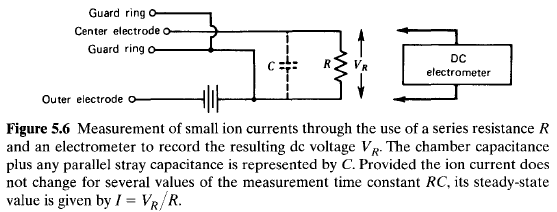
The voltage developed across the resistor (typicallv with a value of \(10^9-10^{12} ohms\)) can be amplified and serves as the basis for the measured signal. One weakness of standard electrometer circuits is that they must be dc coupled throughout. Any small drift or gradual change in component values therefore results in a corresponding change in the measured output current. Thus, circuits of this type must frequently be balanced by shorting the input and resetting the scale to zero.An alternative approach is to convert the signal from dc to ac at an early stage, which then allows a more stable amplification of the ac signal in subsequent stages. This conversion is accomplished in the dynamic-capacitor or vibrating reed electrometer by collecting the ion current across an \(RC\) circuit with long time constant, as shown in Fig. 5.7.
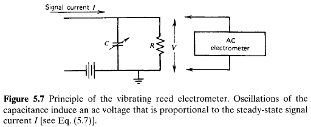
At equilibrium, a constant voltage is developed across this circuit, which is given by \[ V = IR \tag{5.5} \] where \(I\) is the steady-state ionization current. A charge \(Q\) is stored on the capacitance, which is given by \[ Q = CV \tag{5.6} \] If the capacitance is now caused to change rapidly compared with the time constant of the circuit, a corresponding change will be induced in the voltage across \(C\) given by \begin{eqnarray} \Delta V &=& \frac{Q}{C^2}\Delta C \\ \Delta V &=& I\frac{R}{C}\Delta C \tag{5.7} \end{eqnarray} If the value of the capacitance is varied sinusoidally about an average value \(C\), the amplitude of the ac voltage that is induced is therefore proportional to the ionization current.The average ionization current can also be measured over finite periods of time by integration methods. If the value of \(R\) in Fig. 5.6 is made infinite, any ionization current from the chamber is simply integrated across the capacitance \(C\). By noting the change in the voltage across the capacitance over the measurement period, the total integrated ionization current or ionization charge can be deduced. If the amount of natural leakage across the capacitance can be kept small, this integration technique has the potential of being able to measure much smaller ionization currents than through direct dc current measurement.
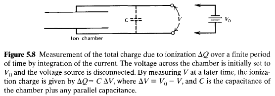
To illustrate, suppose that the ion chamber of Fig. 5.8 is originally charged to a voltage \(V_0\). If the leakage across the chamber insulators and external capacitor is negligible, this voltage would be maintained at its original value indefinitely in the absence of ionizing radiation. If radiation is present, the ions will act to partially discharge the capacitance and reduce the voltage from its original value. If a charge \(\Delta Q\) (defined either as the positive charge of the positive ions or the negative charge of the electrons) is created by the radiation, then the total charge stored on the capacitance will be reduced by \(\Delta Q\). The voltage will therefore drop from its original value of \(V_0\) by an amount \(\Delta V\) given by \[ \Delta V = \frac{\Delta Q}{C} \tag{5.8} \] A measurement of \(\Delta V\) thus gives the total ionization charge or the integrated ionization current over the period of the measurement.
An electret placed with one of its surfaces in contact with the conducting walls of an ion chamber will create an electric field throughout the chamber volume because of the voltage difference on its opposite surface. Any ion pairs created by radiation within the chamber will be separated and collected by this field, serving to partially neutralize the charge carried by the electret. Measurements of the electret voltage before and after the exposure can then be calibrated in terms of the total ionization charge produced in the chamber.
The task of measuring exposure is somewhat more complicated than it might first appear, because it is defined in terms of the ionization created by all the secondary electrons generated at the point at which the dose is to be measured. Strictly speaking, one would need to follow each of these secondary electrons over its entire range and measure all the ionization created along its track. Because the range in air of secondary electrons created by typical gamma-ray energies can be several meters, it is impractical to design an instrument that would carry out such a measurement directly. Instead, the principle of compensation is used.
If the test volume of air is surrounded by an infinite sea of equivalent air that is also subject to the same exposure over the course of the measurement, an exact compensation will occur. That is, all the ionization charge created outside the test volume from secondary electrons that were formed within the volume is exactly balanced by charge created within the test volume from secondary electrons formed in the surrounding air. This situation is illustrated in Fig. 5.9.
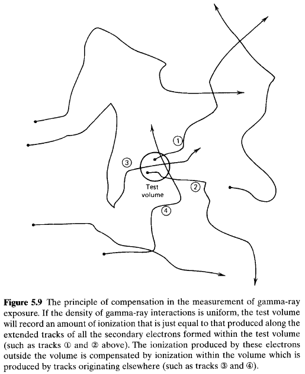
One popular design based on this compensation is diagrammed in Fig. 5.10 and is called the free-air ionization chamber.
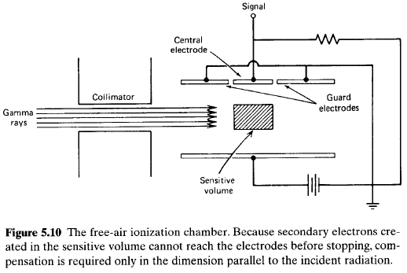
Each end of the chamber is rendered insensitive by grounding the guard electrodes shown in the diagram. The parallel plate geometry creates electric field lines that are perpendicular to the plates in the space between them, but only the volume defined by the central electrode collects ionization current that is registered by the external circuit. The incident gamma-ray beam is collimated so that it is confined to a region that is far from the chamber electrodes, and secondary electrons created in the sensitive volume cannot reach either electrode. Compensation is therefore not required in the vertical dimension but will take place in the horizontal dimension, provided the intensity of the incident radiation beam is not appreciably reduced in its passage through the chamber. Free-air ionization chambers are widely used for accurate exposure measurements for gamma-ray energies below about \(100 keV\).At higher energies, the larger range of the secondary electrons creates some difficulties. In order to prevent ionization loss from secondary electrons reaching the electrodes, the dimensions of the chamber must become impractically large. Therefore, gamma-ray exposure measurements at higher energies are conventionally carried out in cavity chambers in which a small volume of air is surrounded by a solid material (chosen because its properties are as similar as possible to air).
To see how compensation can take place in such a situation, first consider the hypothetical arrangement sketched in Fig. 5.11 in which a small volume of air is defined by ideal electrodes that are transparent to both gamma rays and electrons.
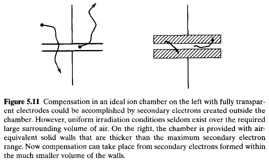
If this test volume is at the center of a large volume of air that is subject to the same exposure, the compensation previously described will take place. For gamma-ray energies greater than a few hundred \(keV\), however, the extended range of the secondary electrons makes the required surrounding volume of air much too large. The test volume would have to be at the center of a room-sized volume of air throughout which the exposure is the same as at the test volume itself. In practical situations uniform exposure conditions seldom exist over such large volumes.The situation could be improved by compressing the air surrounding the test volume into a shell, which could then be no more than a centimeter or two in thickness. Because the same number of air molecules would still be present, none of the compensation properties would change and the test volume would still register an accurate measure of gamma-ray exposure. Now the demands of uniformity could be greatly relaxed to requiring only that the exposure be uniform over the much smaller volume defined by the shell of compressed air. Under these conditions, all ionization lost from the test volume will be compensated by ionization from secondary electrons created within the compressed air shell.
It is now only one step further to replace the hypothetical compressed air shell with a more practical wall of solid material (see Fig. 5.11). The wall is said to be air equivalent if its compensation properties are similar to those of an air layer. This condition will be met provided the secondary electron yield and rate of electron energy loss per unit mass are similar to those of air. Because both these phenomena depend largely on atomic number, it turns out that virtually any material with atomic number close to that of air (such as aluminum or plastics) is reasonably air equivalent.
If the walls are sufficiently thick compared with secondary electron ranges, a condition of electronic equilibrium is established in which the flux of secondary electrons leaving the inner surface of the wall becomes independent of the wall thickness. Neglecting attenuation of the incident gamma-ray beam in the wall, the measured ion current from a chamber of constant air volume will then be the same, independent of the wall thickness. Table 5.2 lists the minimum air-equivalent wall thickness required to establish electronic equilibrium. For ordinary gamma-ray energies, this thickness is \(1 cm\) or less.
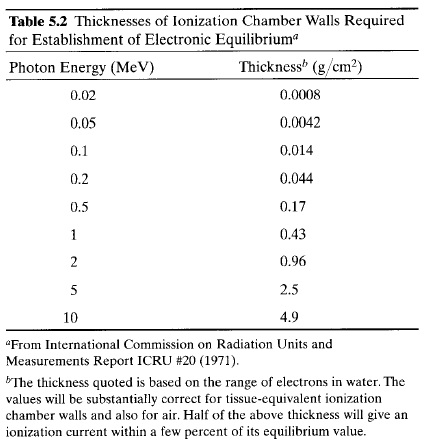
For an air-equivalent ion chamber, the exposure rate \(R\) in \(C/kg\cdot s\) is simply given by the ratio of the saturated ion current \(I_s\) (in \(amperes\)) to the mass \(M\) (in \(kg\)) contained in the active volume: \[ R = \frac{I_s}{M} \tag{5.9} \] The air mass \(M\) is normally calculated from a measurement of the chamber volume and the density at STP, \[ M = 1.293\frac{kg}{m^3} \cdot V \cdot \frac{P}{P_0} \cdot \frac{T_0}{T} \tag{5.10} \] where \begin{eqnarray} V &=& {\rm chamber \, volume \, (in \, m^3)} \\ P &=& {\rm air \, pressure \, within \, the \, chamber} \\ P_0 &=& {\rm standard \, pressure \, (760 mm Hg, \, or \, 1.013 \times 10^5 Pa)} \\ T &=& {\rm air \, temperature \, within \, the \, chamber} \\ T_0 &=& {\rm standard \, temperature \, (273.15 K)} \end{eqnarray} In routine monitoring, exposure rates of the order of \(10^{-3} roentgens/hour\) (\(7.167 \times 10^{-11} C/kg\cdot s\)) are of typical interest. For an ion chamber of \(1000 cm^3\) volume, the saturated ion current at standard temperature and pressure calculated from Eqs. (5.9) and (5.10) is \(9.27 \times 10^{-14} A\). Because this signal current is very low, sensitive electrometers and careful chamber design are required to minimize leakage currents.
From Eq. (5.9), the ion current \(I_s\) expected is simply proportional to the mass of the gas within the chamber. Therefore it can only be enhanced by increasing either the chamber volume or pressure. Thus ion chambers designed to measure very low exposure rates are routinely filled to a high pressure to raise their sensitivity. Because of the increased frequency of collisions in the gas at high pressures, argon is often then substituted for air to avoid the greater recombination rate that accompanies negative ion formation.
For an ion chamber, the solid medium is the wall material and the cavity is its internal gas-filled volume. If the gas is air and the wall is air-equivalent material, the factor \(S_m\) in Eq. (5.11) is unity. These are the conditions necessary for measurement of absorbed dose in air, which is equivalent to measurement of the gamma-ray exposure discussed in the previous section. If other wall materials or gases are used, the absorbed dose in the wall can be calculated by inserting appropriate values for \(W\) and \(S_m\) in Eq. (5.11). The dose in biological tissue is of particular interest in radiation protection, so that "tissue-equivalent" ion chambers are widely applied in which the wall is made from a material with an elemental composition similar to that of tissue.
In some applications, there is a problem in keeping the cavity small enough so that the Bragg-Gray principle applies. For example, if the spectrum of gamma rays under measurement extends to very low photon energies, the corresponding secondary electron ranges will be short. An ion chamber with small internal dimensions compared with these ranges would result in very small ion currents, which may cause measurement difficulties. In these applications, use can be made of the "extrapolation chamber," which consists of a pair of electrodes made from the material of interest mounted with variable spacing between them. A series of measurements can be carried out with different electrode spacings and the measured ion current per unit volume extrapolated to the case of zero spacing. With a vanishingly small cavity, the Bragg-Gray principle is once again applicable and the absorbed dose rate can be calculated from this extrapolated ion current.
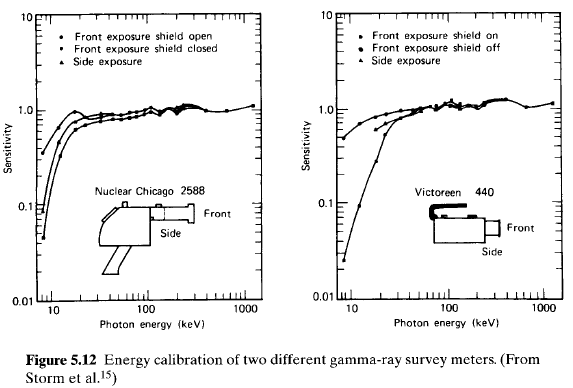
Other types of portable ion chambers used for dose measurements are based on the charge integration principle. As described previously, the chamber is initially charged, placed in the radiation field for a period of time, and the resulting drop in chamber voltage is used as a measure of the total integrated ionization charge. The "Condenser R-meter" consists of a charger-reader mechanism and several interchangeable ion chambers of different sizes and wall thicknesses. Each is designed to cover a different range of gamma-ray energy and maximum dose. When used in the proper range, these devices can give results that are accurate to within a few percent. Another related instrument is a small-size ion chamber known as a "pocket chamber." These are often provided with an integral quartz fiber electroscope that can be read on an internal scale by holding the pocket chamber up to the light. An initial charging of the chamber zeros the scale of the electroscope. The pocket chamber is then worn during the period of monitoring. The total integrated dose can be checked periodically simply by noting the degree of discharge of the chamber as indicated on the electroscope. The ultimate sensitivity of such devices is normally limited by leakage current, which inevitably occurs across the insulator surface over long periods of time.
One specific design of such a chamber is shown in Fig. 5.13.
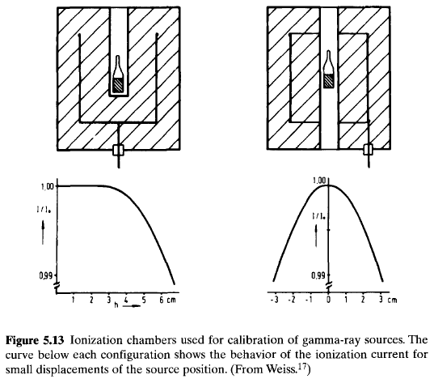
Typical chamber volumes are several thousand \(cm^3\) and the walls are usually made of brass or steel. The inner collecting electrode is made of a thin foil of aluminum or copper to avoid unnecessary radiation attenuation. The geometry is chosen to avoid low-field regions that could lead to changes in the effective active volume with applied voltage. In such a chamber with a \(10^4 cm^3\) active volume, the saturation current produced by \(1 \mu Ci (3.7 \times 10^4 Bq)\) of \(^{60}Co\) is on the order of \(10^{-13}A\), about five times the background current. If higher sensitivity is needed, the gas within the ion chamber may be pressurized. Raising the pressure to 20 atm will increase the ion current by a factor of 20, but the total background arising from all sources will increase by a lesser factor. For large chambers, the component of background arising from alpha activity of the chamber walls should be independent of pressure, provided the alpha particles are already fully stopped within the gas. Pressurizing the chamber, however, requires the use of relatively thick entrance windows, which, although not usually a problem for gamma rays, can interfere with the extension of the applications to include pure beta-emitting isotopes.The ionization current expected from a given quantity of radioactive gas within the chamber is given by \[ I = \frac{\overline{E}\alpha e}{W} \tag{5.12} \] where \begin{eqnarray} I &=& {\rm ionization \, current \, (in \, A)} \\ \overline{E} &=& {\rm average \, energy \, deposited \, in \, the \, gas \, per \, disintegration \, (in \, eV)} \\ \alpha &=& {\rm total \, activity \, (in \, Bq)} \\ e &=& {\rm electronic \, charge \, (in \, C)} \\ W &=& {\rm average \, energy \, deposited \, per \, ion \, pair \, in \, the \, gas \, (in \, eV)} \end{eqnarray}
The quantity \(\overline{E}\) is simple to predict only in the case of very small radiation energies that are nearly always fully absorbed within the chamber gas. For example, the soft beta particles emitted in the decay of tritium have an average energy of \(5.65 keV\), and \(\overline{E}\) can be taken as equal to this value for chambers that are large compared with the corresponding beta particle range in the gas. Equation (5.12) then predicts a sensitivity of about \(1 pA/\mu Ci\), or \(2.7 \times 10^{-17} A/Bq\). Once a beta particle energy is large enough so that typical ranges are comparable to chamber dimensions, more complex procedures are required to estimate the average energy deposited (e.g., see Ref. 20).
A common application is one in which samples of air that contain trace quantities of a radioactive gas are to be continuously monitored. When the gas that flows through the chamber is subject to atmospheric changes, a number of difficulties can arise. These perturbing influences can include effects due to moisture, aerosols, ions, and smoke, which may be found in the sampled air. Prior treatment of the incoming air by filtration or electrostatic precipitation can help to control many of these influences.
The chamber will also be sensitive to the ambient gamma-ray background radiation. If constant, this background can be eliminated by simple subtraction of the signal recorded when the chamber is filled with pure air. In other situations in which the gamma-ray background may change during the course of the measurement, a twin chamber filled with pure air can be used to generate a compensating signal that is subtracted from that produced by the chamber through which the sample gas is circulated.
This principle is the basis of an instrument called the long-range alpha detector (LRAD). Samples of materials or equipment that might be contaminated by alpha particle emitters are placed into a container through which there is a flow of air. Since the range of the alpha particles is only a few centimeters in air, their direct detection would require bringing a suitable detector very near to the surface, a process that may be impractical because of inaccessibility of the surfaces. Instead, the air stream flowing past these surfaces will pick up some of the positive and negative ions and transport them downstream through a conventional ion chamber. The drift of the ions in the chamber electric field takes place over milliseconds, so the slower motion of the air flow does not play an important role in the detected signal. This application illustrates that the ion current results from the motion of the ions within the field of the ion chamber, regardless of where these ions were originally formed.
The equivalent circuit of an ion chamber operated in pulse mode is shown in Fig. 5.14.
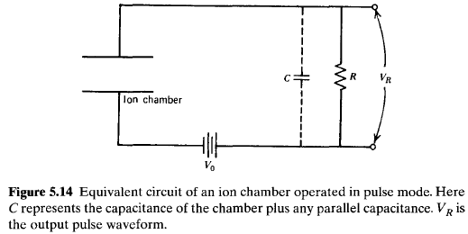
The voltage across the load resistance \(R\) is the basic electrical signal. In the absence of any ionization charge within the ion chamber, this signal voltage is zero, and all the applied voltage \(V_0\) appears across the ionization chamber itself. When an ionizing particle passes through the chamber, the ion pairs that are created begin to drift under the influence of the electric field. As will be shown in the analysis below, these drifting charges give rise to induced charges on the electrodes of the ion chamber that reduce the ion chamber voltage from its equilibrium value \(V_0\). A voltage then appears across the load resistance, which is equal to the amount by which the chamber voltage has dropped. When all charges within the chamber have been collected at the opposite electrodes, this voltage reaches its maximum value. There then follows a slow return to equilibrium conditions on a time scale determined by the time constant \(RC\) of the external circuit. During this period, the voltage across the load resistance gradually drops to zero and the chamber voltage returns to its original value \(V_0\). If the time constant of the external circuit is long compared with the time required to collect the charges within the chamber, a signal pulse is produced whose amplitude indicates the magnitude of the original charge generated within the ion chamber.As indicated in the earlier discussion of electron and ion mobilities in gases, typical times required to collect free electrons over several centimeters are a few microseconds. On the other hand, ions (either positive or negative) drift much more slowly and typically require collection times of the order of milliseconds. Therefore, if a signal that accurately reflects the total contribution of both the ions and electrons is to be generated, the collection circuit time constant and subsequent pulse-shaping time constants must be long compared with a millisecond. Under these conditions, the ion chamber must be restricted to very low pulse rates to avoid excessive pulse pile up. Furthermore, the sensitivity of the output of the shaping circuits to low frequencies makes the system susceptible to interference from microphonic signals generated by mechanical vibrations within the ion chamber.
For these reasons, pulse-type ion chambers are more often operated in the electron-sensitive mode. Here a time constant is chosen that is intermediate between the electron collection time and the ion collection time. The amplitude of the pulse that is produced then reflects only the drift of the electrons and will have much faster rise and fall times. Shorter shaping time constants and much higher rates can therefore be tolerated. A significant sacrifice has been made, however, in that the amplitude of the output pulse now becomes sensitive to the position of the original radiation interaction within the chamber and no longer reflects only the total number of ion pairs formed. The use of more complex gridded chambers, described in a later section, can overcome this disadvantage to a large degree. The fill gas of any electron-sensitive ion chamber must of course be chosen from those gases in which the electrons remain as free electrons and do not form negative ions.
In the derivation that follows, we assume that a sufficient electric field is applied so that electron-ion recombination is insignificant and also that the negative charges remain as free electrons. We first derive an expression for the pulse shape for the case in which the collecting circuit time constant is much longer than both the ion and electron collection times.
The pulse shape depends on the configuration of the electric field and the position at which the ion pairs are formed with respect to the equipotential surfaces that characterize the field geometry. To simplify the following analysis, we assume that the chamber electrodes are parallel plates, for which the equipotential surfaces are uniformly spaced planes parallel to the electrode surfaces, and the constant electric field intensity is given by \[ \mathscr{E} = \frac{V}{d} \tag{5.13} \] Here \(V\) is the voltage across the chamber electrodes and \(d\) is their spacing. As a further simplification, we assume that all ion pairs are formed at an equal distance \(x\) from the positive electrode where the electric potential is equal to \(\mathscr{E}x\). This situation is sketched in Fig. 5.15.
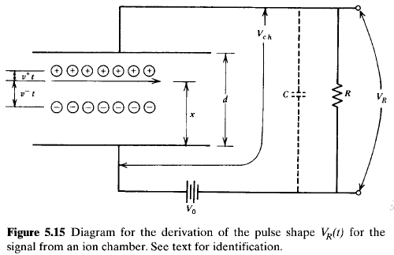
The pulse shape is most easily derived based on arguments involving the conservation of energy. Because the time constant of the external circuit is assumed to be large, no appreciable current can flow during the relatively short time required to collect the charges within the ion chamber. Therefore, the energy required to move the charges from their place of origin must come from the energy originally stored across the capacitance \(C\), represented by the ion chamber and associated stray capacitance. This energy is \(\frac{1}{2}CV_{0}^2\), where \(V_0\) is the applied voltage.
After a time \(t\), the ions will have drifted a distance \(v^+t\) toward the cathode, where \(v^+\) is the ion drift velocity. Similarly, the electrons will have moved a distance \(v^-t\) toward the: anode. Both of these motions represent the movement of charge to a region of lower electric potential, and the difference in potential energy is absorbed in the gas through the multiple collisions the charge carriers undergo with gas molecules during their motion. This energy is equal to \(Q\Delta\varphi\) for both the ions and electrons, where \(Q\) is the total charge and \(\Delta\varphi\) is the change in electric potential. The charge \(Q = n_0e\), where \(n_0\) is the number of original ion pairs and \(e\) is the electronic charge. The potential difference \(\Delta\varphi\) is the product of the electric field h and the distance traveled toward the electrode. Conservation of energy can therefore be written
| original stored energy |
= | energy absorbed by ions |
+ | energy absorbed by electrons |
+ | remaining stored energy |
| \[\frac{1}{2}CV_0^2\] | \[=\] | \[n_0e\mathscr{E}v^+t\] | \[+\] | \[n_0e\mathscr{E}v^-t\] | \[+\] | \[\frac{1}{2}CV_{\rm ch}^2\] |
The signal voltage is measured across \(R\) in Fig. 5.15 and is denoted as \(V_R\). Its magnitude is almost always small compared with \(V_0\) and is given by \(V_0 - V_{\rm ch}\). We can therefore make the approximations \[ V_0 + V_{\rm ch} \cong 2V_0 \qquad {\rm and} \qquad \frac{V_{\rm ch}}{d} \cong \frac{V_0}{d} \] Putting these substitutions in Eq. (5.14), we obtain \begin{eqnarray} \frac{1}{2}C(2V_0)V_R &=& n_0e\left(\frac{V_0}{d}\right)(v^+ + v^-)t \\ V_R &=& \frac{n_0e}{dC}(v^+ + v^-)t \tag{5.15} \end{eqnarray} This result describes the initial portion of the signal pulse and predicts a linear rise with time. It is valid only for the period that both the ions and electrons are drifting within the chamber.
The concept of induced charge is sometimes used to describe the changes caused by the drifting charge carriers. By drifting a distance \(v^+t\), the ions cause the chamber voltage to drop by an amount equal to \(n_0ev^+t/dC\). The same effect would be caused by the reduction of the charge stored across the capacitance \(C\) by an amount \(n_0ev^+t/d\). Therefore, the ion motion can be thought of as inducing a charge of this magnitude. A similar induced charge is created by the electron motion. It should be emphasized that the induced charge results only from the motion of the charge carriers within the chamber volume and does not require their collection at either electrode.
After a time \(t^- \equiv x/v^-\), the electrons reach the anode. Their drift has then contributed the maximum possible to the signal voltage, and the second term in Eq. (5.15) becomes a constant equal to its value at \(t^-\). This constant value is \(n_0ev^-t^-/dC\) or \(n_0ex/dC\). For the next period of time, only the ions are still drifting, and Eq. (5.15) takes the form \[ V_R = \frac{n_0e}{dC}(v^+ + x) \tag{5.16} \] The ions reach the cathode after a time \(t^+ \equiv (d - x)/v^+\). At this point, the signal voltage no longer increases, and Eq. (5.15) becomes \[ V_R = \frac{n_0e}{dC}[(d - x) + x] \] or \[ V_R = \frac{n_0e}{C} \tag{5.17} \]
The shape of the signal pulse predicted by Eqs. (5.15), (5.16), and (5.17) is shown in Fig. 5.16.
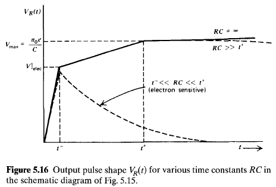
When the collection circuit time constant is very large, or \(RC \gg t^+\), the maximum amplitude of the signal pulse is given by \[ V_{\rm max} = \frac{n_0e}{C} \tag{5.18} \] and is independent of the position at which the ion pairs were formed within the chamber. Under these conditions, a measurement of the pulse amplitude \(V_{\rm max}\) gives a direct indication of the original number of ion pairs no that contributed to the pulse.In electron-sensitive operation, however, the portion of the pulse derived above that corresponds to drift of the ions is almost entirely lost by choosing a collection time constant that is much shorter than the ion collection time. The pulse that remains then reflects only the drift of the electrons and will have an amplitude given by Eq. (5.16) (neglecting ion drift) \[ V\left|_{\rm elec} = \frac{n_0e}{C}\cdot\frac{x}{d}\right. \tag{5.19} \] The shape of this pulse is also sketched in Fig. 5.16. Only the fast rising portion of the pulse is preserved, and the amplitude is now dependent on the position \(x\) at which the electrons were originally formed within the chamber.
In any real situation, the incident radiation creates ion pairs over a range of positions within the chamber. The sharp discontinuities shown in Fig. 5.16 are then somewhat "washed out" in the resulting pulse shape. Electron-sensitive operation will also lead to a situation in which a range of pulse amplitudes will be produced for monoenergetic incident radiation, often a decided disadvantage.
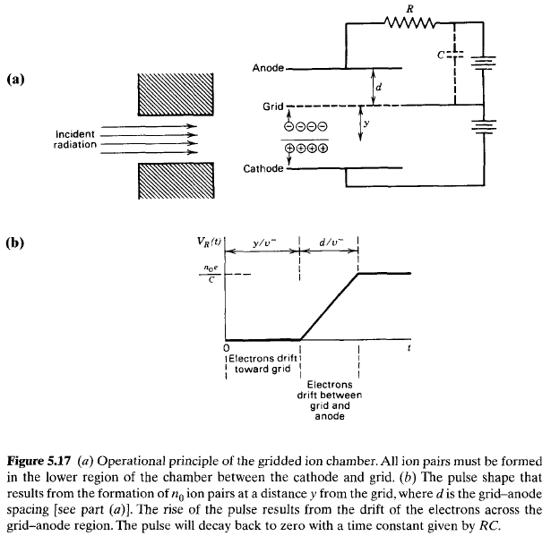
Here the volume of the ion chamber is divided into two parts by a Frisch grid, named after the originator of the design. Through the use of external collimation or preferential location of the radiation source, all the radiation interactions are confined to the volume between the grid and the cathode of the chamber. Positive ions simply drift from this volume to the cathode. The grid is maintained at an intermediate potential between the two electrodes and is made to be as transparent as possible to electrons. Electrons are therefore drawn initially from the interaction volume toward the grid. Because of the location of the load resistor in the circuit, neither the downward drift of the ions nor the upward drift of the electrons as far as the grid produces any measured signal voltage. However, once the electrons pass through the grid on their way to the anode, the grid-anode voltage begins to drop and a signal voltage begins to develop across the resistor. The same type of argument that led to Eq. (5.15) predicts that, for a circuit time constant large compared with the electron collection time, the time-dependent signal voltage across the resistor is \[ V_R = \frac{n_0e}{dC}v^-t \tag{5.20} \] where \(d\) is now the grid-anode spacing. This linear rise continues until the electrons reach the anode (see Fig. 5.17b). The maximum signal voltage is therefore \[ V_{\rm max} = \frac{n_0e}{C} \tag{5.21} \] which is identical to Eq. (5.18). However, now the signal is derived only from the drift of electrons rather than from the motion of both electrons and positive ions. The slow rise corresponding to the drift of ions is eliminated, and the circuit time constant can therefore be set at a much shorter value typical of the electron-sensitive mode of operation described in the previous section. Since each electron passes through the same potential difference and contributes equally to the signal pulse, the pulse amplitude is now independent of the position of formation of the original ion pairs and is simply proportional to the total number of ion pairs formed along the track of the incident particle.In ion chambers of ordinary size and pressure, pulses from fast electron or gamma-ray interactions will be much smaller. The value of \(n_0\) in the above example will be smaller by as much as a factor of 100 because of the low \(dE/dx\) along the primary or secondary electron tracks through the gas. It then becomes difficult or impossible to amplify these very small pulses successfully without severe deterioration that results from various sources of noise in the signal chain. For these reasons, the detectors described in the following two chapters, which take advantage of internal gas multiplication of the charge, are usually preferred because of their resulting larger signal pulses. Exceptions in which pulse-mode ion chambers can be applied to gamma-ray measurements are given in Chapter 19 in which either a liquid or high-pressure fill gas are of sufficient density to fully stop the secondary electrons and thus restore the value of \(n_0\) to nearer that given in the example.
Pulse-type ion chambers have found application in a number of circumstances where their unrestricted size and other characteristics have been exploited. They have proved useful in low-level alpha particle measurement where parallel-plate-type gridded ion chambers have been constructed with cross-sectional areas up to \(500 cm^2\). Even larger chambers can conveniently be constructed by using cylindrical geometry. In order to achieve good energy resolution, a Frisch grid is normally incorporated into the chamber design. Because of the small amplitude of typical pulses, special care must be taken in choosing a low noise preamplifier and in minimizing mechanical vibrations, which, by modulating the detector capacitance, can give rise to interfering microphonic noise. Using standard techniques, one can achieve energy resolution for \(5 MeV\) alpha particles of \(35-45 keV\) for such chambers. By using a cooled preamplifier to reduce the electronic noise, Bertolini demonstrated an energy resolution of \(11.5 keV\) for alpha particles, essentially the ultimate limit set by charge carrier statistics. This energy resolution is comparable to the best that can currently be achieved using silicon semiconductor detectors.
In the conventional configuration, an entrance window for the chamber is provided so that the charged particles travel perpendicular to the electric field lines as shown in Fig. 5.17a. In that case, all the electrons formed along a given track are approximately equidistant from the grid, and each will have approximately the same drift time. The voltage pulse therefore has the general characteristics shown in Fig. 5.17b and all particle tracks give signal pulses of similar shape. It has been demonstrated that there can be some advantage in designing the chamber so that the particle tracks are parallel rather than perpendicular to the field lines. Then the drift time of electrons to the grid will be different for those formed at the beginning of the track compared with those near the end. The detailed shape of the rise of the output pulse will therefore reflect the spatial distribution of ion pairs as they were formed along the track of the incident particle. Because this spatial distribution is conventionally called a Bragg curve (see p. 32), an analysis of the pulse shape to yield information on this spatial distribution is conventionally called Bragg curve spectroscopy. This approach has proved to be very useful in extending the information obtained from gridded ion chambers beyond a simple measurement of the energy of the particle. Appropriate analysis of the pulse shape can distinguish between particles of different type (atomic number and/or charge state) through differences in the shape of their Bragg curve.